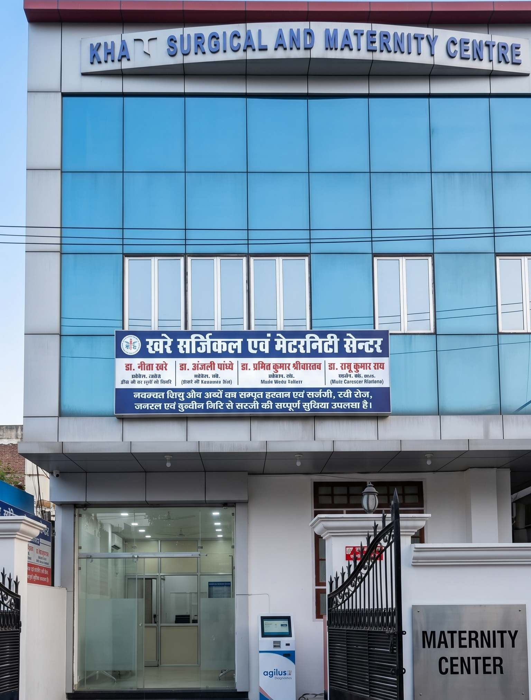

Providing trusted maternity, pediatric, expert surgical, NICU, PICU, and emergency healthcare services with renowned specialists and round-the-clock clinical support.

From emergency neonatal care to advanced laparoscopic surgery — all specialized services available 24x7.
Complete prenatal, delivery, and postnatal care with premium suites. Normal deliveries and C-sections handled by veteran obstetricians in fully equipped modular operation theatres.
Advanced neonatal and pediatric intensive care units with cutting-edge life support and continuous monitoring systems.
Minimally invasive laparoscopic and specialized pediatric surgical interventions for faster, safer recovery.
All critical medicines, pediatric formulations, and emergency drugs available round-the-clock, every day.
Professional nursing and specialized medical support delivered in the comfort of your home, whenever needed.
A dedicated team of highly qualified consultants, surgeons, and therapists committed to your family's health.
From gold-medalist gynecologists to Boston-trained pediatricians, every specialist at KMC is committed to delivering world-class care with genuine compassion.
"Dr. Neeta Khare and her team handled my high-risk delivery with exceptional skill and care. My baby and I are completely healthy thanks to the wonderful team at KMC."
"Our premature baby spent 3 weeks in the NICU at KMC. The doctors were incredibly attentive. We are forever grateful. Dr. Puneet Tulsyan is a truly remarkable pediatrician."
"Dr. Ajay Kumar Verma performed my child's surgery with amazing precision. The team made us feel safe and informed throughout. Highly recommend KMC to every family in Lucknow."
"The 24x7 pharmacy and emergency staff responded immediately when we arrived at midnight. A true lifesaver. The infrastructure here rivals the best hospitals in Lucknow."
"Dr. Megha Tulsyan guided me through my entire pregnancy with confidence and warmth. Normal delivery at KMC was a wonderful, peaceful experience."
Book a consultation with our specialists today. Walk-ins welcome 24x7 for emergency cases.